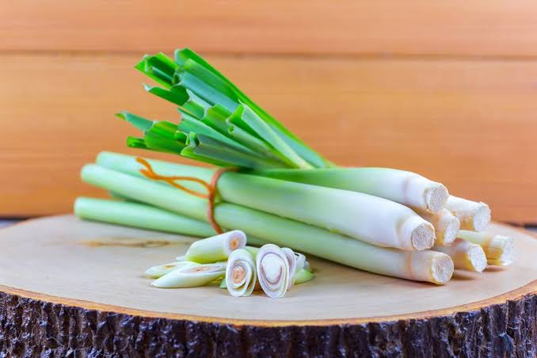

Kandungan Utama
- Minyak atsiri (Citral)
- Geraniol
- Citronellal
- Citronellol
- Limonene
- Flavonoid
- Saponin
- Tanin
- Polifenol
- Antioksidan alami

Nama Ilmiah : Cymbopogon citratus
Serai atau sereh merupakan tanaman herbal yang banyak dimanfaatkan sebagai bumbu masakan sekaligus tanaman obat keluarga (TOGA). Tanaman ini memiliki aroma khas yang berasal dari kandungan minyak atsiri. Dalam pengobatan tradisional, serai telah lama digunakan untuk membantu menghangatkan tubuh, melancarkan pencernaan, meredakan masuk angin, serta menjaga kesehatan tubuh secara alami.
Serai memiliki berbagai manfaat bagi kesehatan karena mengandung minyak atsiri dan antioksidan yang cukup tinggi. Secara tradisional, serai dipercaya membantu menghangatkan tubuh, meredakan masuk angin, melancarkan sistem pencernaan, mengurangi perut kembung, membantu mengatasi mual, serta memberikan efek relaksasi yang dapat membantu mengurangi stres ringan. Selain itu, serai juga memiliki sifat antibakteri, antijamur, antiinflamasi, dan antioksidan yang membantu melindungi tubuh dari radikal bebas. Minuman serai juga sering dikonsumsi untuk membantu menjaga daya tahan tubuh dan memberikan rasa segar.
Serai umumnya aman dikonsumsi sebagai bumbu maupun minuman herbal dalam jumlah yang wajar. Namun, konsumsi berlebihan dapat menyebabkan iritasi lambung pada sebagian orang. Ibu hamil, ibu menyusui, penderita tekanan darah rendah, atau seseorang yang sedang menjalani pengobatan tertentu disarankan berkonsultasi dengan tenaga kesehatan sebelum mengonsumsi serai secara rutin sebagai obat herbal.
Scan QR Code berikut untuk membuka halaman informasi tanaman Serai.